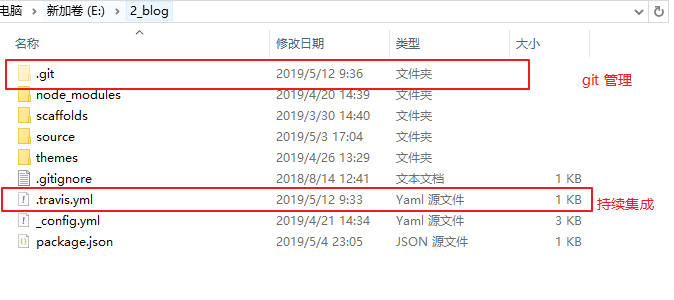

hexo的持续集成失败之思
写在前面
这是一次失败的经历，花了将近两个小时，才知道原来自己想的方法，在特定的情况下是无法实现的，本文将简单的记录这次事情的前因后果。
如果要写出这次构建的整个流程细节的话，那还是算了吧，写文章还是很累的，一篇长文下来，一两个小时就过去了，尤其是针对这种实操性质的文章，写的更慢。而且对于自己产出的内容，一定要验证其正确性，文章内容需要进行复现，验证，而不是单单的写出来就完事。所以，还是好好当个快乐咸鱼吧。
太长不看版
成功生成 gh-pages 分支后，却还是无法正常访问生成后的页面，查找其根本原因。在仓库的 setting/Github Pages/Souce/Learn more 中有一段话:
You can configure GitHub Pages to publish your site’s source files from master, gh-pages, or a /docs folder on your master branch for Project Pages and other Pages sites that meet certain criteria.
If your site is a User or Organization Page that has a repository named username.github.io or orgname.github.io, you cannot publish your site’s source files from different locations. User and Organization Pages that have this type of repository name are only published from the master branch.
翻译过来就是，你可以使用master分支、gh-pages分支、/docs 文件夹，这三种方式都能展示到 Github Pages。但是，你的仓库是 username.github.io的话，那么抱歉，你就只能对外展示 master 分支的内容。
起因
之前，有使用过 vuepress 和 Travis CI ，来搭建一个简单的记事本的网页。访问 vuepress初体验 了解更多。
昨儿，有人提到了博客备份很重要，于是就想到了使用 Travis CI，这样只需要使用 git 指令，上传整个博客文件夹（可以把之前的 public 文件夹删掉），而不是每次都执行一遍 hexo g -d，之后上传的 public 文件夹中的内容。这样就达到了即自动备份了目录，又能够自动进行博客的目的。
大概目录结构就是下面这样。

目标
在 username.github.io 的远程仓库中，存放上图中的所有文件，使用 Travis CI 对其进行持续集成。最终达到提交文件，更改 master 分支里的内容，同时 Travis CI 自动生成静态页面以及部署到 gh-pages 分支。
经过
嗯，最开始参照另外一篇博文 如何快速搭建一个有域名且持续集成的hexo博客(2.0版) 。花了大概半个小时，走了一遍整个流程。想的是如果别人已经写出来了，那么自己就能够很容易的顺着他的思路，也完成一遍。
但是很显然咱没有意识到到这个作者写出来的文章是有缺陷的，因为它的构建方法，是无法实现自动备份的功能，其本质原因是它的执行脚本里面依旧是把生成 public 文件夹上传到远程仓库，只不过不再需要自己手动生成，因此它的文章并不符合咱所想要实现的目标。
所以一切回到原点，于是开始尝试自己理解持续集成的流程，加上之前的心得，于是乎，自己就稍微改进了一下 Travis.yml 文件。最后，就有了下面的脚本，好嘛，这不就是跟之前的那个 vuepress 时写的脚本差不多。
language: node_js
node_js: stable
# Travis-CI Caching
cache:
directories:
- node_modules
install:
- npm install
script:
- hexo clean
- hexo g
deploy:
provider: pages
local-dir: public
skip-cleanup: true
github-token: $GH_TOKEN
keep-history: true
on:
branch: master其中 $GH_TOKEN 需要先在 github 的 setting 中完成 Access Token的申请。然后在 Travis 控制台中选定需要持续集成的远程仓库，同时进行设置，具体细节在上面提到的文章都中有说。
思考
既然无法在 username.github.io分支上面实现自己的想法，那或许可以退而求其次，将博客迁移到其他某个分支比如 blog 上，再重复一遍持续集成的操作，借由 username.github.io/blog 访问博客，而 username/github.io 可以做一个引导页。
不过作为一名已经建立博客几个月的人来说，咱不得不放弃这种想法了，因为一旦进行迁移，之前所有的访问，留言都将失效，得不偿失。故此，咱也只能放弃这种想法了。
综合考虑，放弃直接在 username.github.io 上进行持续集成，依旧使用古老的hexo g -d 指令。
而至于备份，可以新建一个私有仓库，对博客目录下文件进行 git 跟踪、保存。git 和 hexo-deployer-git插件 不会产生冲突，因为在根目录下的 .gitignore 可以设置忽略的文件。
.DS_Store
Thumbs.db
db.json
*.log
node_modules/
public/
.deploy*/